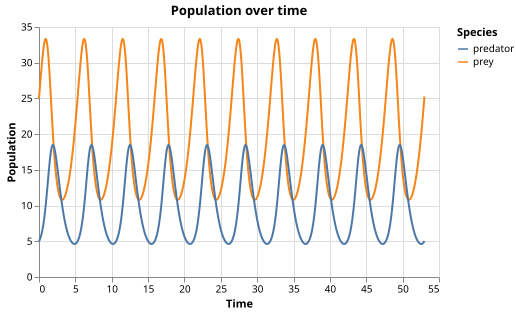

Predator-Prey Dynamics
The Problem
- Many ecosystems contain predators that eat prey, and the two populations influence each other over time.
- When prey are abundant, predators thrive and multiply; when predators are numerous, prey decline; when prey are scarce, predators starve and their numbers fall; prey then recover.
- This cycle repeats indefinitely, producing oscillating populations.
- The Lotka-Volterra model is the simplest mathematical description of this interaction. It is also used in chemistry (autocatalytic reactions), economics (supply and demand cycles), and epidemiology.
The Equations
- Let $x(t)$ be prey population and $y(t)$ be predator population.
- The model is a pair of ordinary differential equations:
$$\frac{dx}{dt} = ax - bxy \qquad \frac{dy}{dt} = cxy - dy$$
- Each term has a direct interpretation:
- $ax$: prey grow exponentially in the absence of predators (birth rate $a$).
- $bxy$: prey are removed at a rate proportional to encounters between species (predation rate $b$).
- $cxy$: predators gain from eating prey (efficiency $c$).
- $dy$: predators die at a constant per-capita rate $d$.
Parameters and Equilibrium
# Rate parameters (arbitrary units).
# PREY_BIRTH: per-capita prey growth rate in the absence of predators.
# PREDATION: rate at which one predator removes prey (per predator per prey).
# PRED_GROWTH: rate at which predators gain from eating prey (per predator per prey).
# PRED_DEATH: per-capita predator death rate in the absence of prey.
PREY_BIRTH = 1.0
PREDATION = 0.1
PRED_GROWTH = 0.075
PRED_DEATH = 1.5
# Equilibrium populations: the fixed point of the ODE system.
# Setting dx/dt = 0 and dy/dt = 0 gives x* = PRED_DEATH/PRED_GROWTH
# and y* = PREY_BIRTH/PREDATION.
PREY_EQ = PRED_DEATH / PRED_GROWTH # 20.0
PRED_EQ = PREY_BIRTH / PREDATION # 10.0
# Initial conditions: start above the prey equilibrium and below the
# predator equilibrium to produce a visible oscillation.
PREY_INIT = 25.0
PRED_INIT = 5.0
# Simulate for ~10 complete cycles. The small-oscillation period
# (linearised around equilibrium) is 2π / sqrt(PREY_BIRTH * PRED_DEATH).
# The true nonlinear period is ~5.30 for these initial conditions,
# so T_MAX = 53.0 covers roughly 10 full cycles.
PERIOD_APPROX = 2 * np.pi / np.sqrt(PREY_BIRTH * PRED_DEATH)
T_MAX = 53.0
# Dense output resolution: one point per 0.05 time units.
N_EVAL = int(T_MAX / 0.05) + 1
- Setting both derivatives to zero gives the equilibrium: $x^ = d/c$ and $y^ = a/b$.
- At the equilibrium, populations are constant; any perturbation produces oscillations.
PERIOD_APPROXis derived by linearising around the equilibrium. The exact period depends on the amplitude and must be measured from the solution.
With PREY_BIRTH = 1.0, PREDATION = 0.1, PRED_GROWTH = 0.075, PRED_DEATH = 1.5,
what is the prey equilibrium $x^* = d/c$?
- 10.0
- Wrong: 10.0 is the predator equilibrium $y^* = a/b$ =
PREY_BIRTH / PREDATION. - 13.3
- Wrong: that is
PREY_BIRTH / PRED_GROWTH= 1.0 / 0.075, which is not the equilibrium formula. - 20.0
- Correct: $x^* = d/c$ =
PRED_DEATH / PRED_GROWTH= 1.5 / 0.075 = 20.0. - 1.0
- Wrong:
PREY_BIRTH= 1.0 is a rate parameter, not the equilibrium prey population.
Implementing the Right-Hand Side
solve_ivprequires a function that takes time $t$ and state vector $z = [x, y]$ and returns $[dx/dt,\; dy/dt]$.- The function must not modify $z$; it should return a new list.
def rhs(t, z):
"""Return [dx/dt, dy/dt] for the Lotka-Volterra equations.
z[0] = x (prey population)
z[1] = y (predator population)
"""
x, y = z
dxdt = PREY_BIRTH * x - PREDATION * x * y
dydt = PRED_GROWTH * x * y - PRED_DEATH * y
return [dxdt, dydt]
Starting from abundant prey and few predators, put these events in the correct cyclic order.
- Prey population is high; predators begin to multiply
- Predator population peaks; prey decline rapidly
- Prey population is low; predators begin to starve and decline
- Predator population is low; prey begin to recover
Match each term in the Lotka-Volterra equations to its biological meaning.
| Term | Meaning |
|---|---|
| $ax$ | Prey grow exponentially in the absence of predators | | $bxy$ | Prey are removed at a rate proportional to predator-prey encounters | | $cxy$ | Predators gain population from consuming prey | | $dy$ | Predators die at a constant per-capita rate |
Solving the System
solve_ivpadvances the state from $t = 0$ toT_MAXusing an adaptive Runge-Kutta method.t_evalspecifies the output times; it does not control the internal step size.rtolandatolcontrol the solver's internal error tolerance. Setting them to $10^{-8}$ and $10^{-10}$ gives solutions accurate to roughly eight significant figures.
def solve():
"""Integrate the Lotka-Volterra equations and return results as a DataFrame."""
t_eval = np.linspace(0, T_MAX, N_EVAL)
sol = solve_ivp(
rhs,
[0, T_MAX],
[PREY_INIT, PRED_INIT],
t_eval=t_eval,
method="RK45",
rtol=1e-8,
atol=1e-10,
)
return pl.DataFrame({"t": sol.t, "prey": sol.y[0], "predator": sol.y[1]})
Visualizing the Results
- Two views of the solution complement each other.
def plot_time_series(df):
"""Return an Altair chart of prey and predator populations over time."""
long = df.unpivot(
index="t",
on=["prey", "predator"],
variable_name="species",
value_name="population",
)
return (
alt.Chart(long)
.mark_line()
.encode(
x=alt.X("t", title="Time"),
y=alt.Y("population", title="Population"),
color=alt.Color("species:N", title="Species"),
)
.properties(width=400, height=250, title="Population over time")
)
def plot_trajectory(df):
"""Return an Altair chart of the predator-prey population trajectory."""
return (
alt.Chart(df)
.mark_line()
.encode(
x=alt.X("prey", title="Prey"),
y=alt.Y("predator", title="Predator"),
)
.properties(width=300, height=300, title="Population trajectory")
)
- The time-series plot shows both populations over time.
- The prey population (blue) rises first; the predator population (orange) rises shortly after.
- Predator peaks lag prey peaks because predators need abundant food before they can multiply.
- Once predators are numerous, prey decline rapidly; predators then starve and their numbers fall.
- The prey then recover, and the cycle begins again.

- The population trajectory plots $x$ versus $y$ at each point in time.
- When the solution returns to approximately the same $(x, y)$ point after one cycle, the curve closes on itself.
- A nearly closed loop means the system keeps repeating the same pattern indefinitely.

Testing
Populations remain positive
- Analytically, neither population can reach zero in finite time: the positive quadrant is invariant.
- If a numerical solution produces a negative population, the solver has made a large error or the parameters are degenerate.
Volterra averaging principle
- Volterra proved that the time mean of $x(t)$ over any complete number of cycles equals $x^* = d/c$, and similarly for $y(t)$.
- This is an exact analytical result, not an approximation.
- Over
T_MAXcovering ~10 complete cycles, the fractional-cycle bias is below 0.2%. A relative tolerance of 1% gives a 5x safety margin over that measured bias.
Period matches linearised estimate
- Linearising the LV equations around equilibrium gives small oscillations with period $2\pi/\sqrt{ad}$.
- For finite-amplitude oscillations the true period is longer (the nonlinear correction is $O(\text{amplitude}^2)$).
- With our initial conditions the measured period is ~5.30 versus the linearised estimate of ~5.13, a 3.3% deviation.
- A tolerance of 10% gives a safety factor of 3 over that measured deviation.
import numpy as np
from scipy.signal import find_peaks
from lotka import (
PRED_EQ,
PERIOD_APPROX,
PREY_EQ,
solve,
)
def test_populations_positive():
# The Lotka-Volterra equations conserve the positive quadrant: if x > 0
# and y > 0 initially, both remain positive for all t > 0. A negative
# value would mean a population went extinct, which this model cannot
# produce analytically; it would indicate a numerical error.
df = solve()
assert (df["prey"] > 0).all()
assert (df["predator"] > 0).all()
def test_volterra_principle():
# Volterra's averaging principle: the time mean of x(t) over any integer
# number of complete cycles equals x* = PRED_DEATH/PRED_GROWTH, and
# similarly for y(t). T_MAX covers ~10 complete cycles, so the fractional-
# cycle bias is small. The measured errors are < 0.2%; a tolerance of
# 1% (relative) gives a 5x safety margin.
df = solve()
x_mean = df["prey"].mean()
y_mean = df["predator"].mean()
assert abs(x_mean - PREY_EQ) / PREY_EQ < 0.01
assert abs(y_mean - PRED_EQ) / PRED_EQ < 0.01
def test_period():
# The small-oscillation period (linearisation around equilibrium) is
# 2π / sqrt(PREY_BIRTH * PRED_DEATH). For finite-amplitude oscillations
# the true period differs by O(amplitude²). With our initial conditions
# the measured period is ~5.30 vs the linearised estimate of ~5.13, a
# 3.3% difference. A tolerance of 10% gives a 3x safety margin.
df = solve()
peaks, _ = find_peaks(df["prey"].to_numpy())
t_peaks = df["t"].to_numpy()[peaks]
assert len(t_peaks) >= 3, "too few peaks detected to estimate period"
measured_period = np.diff(t_peaks).mean()
assert abs(measured_period - PERIOD_APPROX) / PERIOD_APPROX < 0.10
Exercises
Starting at the equilibrium
Set PREY_INIT = PREY_EQ and PRED_INIT = PRED_EQ and run the simulation.
What does plot_time_series show?
What does plot_trajectory show?
Explain why in terms of the fixed-point analysis.
Effect of initial conditions on period
Run the simulation with three different starting points:
$(x_0, y_0)$ = (21, 10.5), (25, 5), and (40, 2).
Plot the population trajectories on the same axes using different colors.
Measure the period of each orbit using find_peaks.
Is the period the same for all three orbits, or does it vary with amplitude?
Compare each measured period to PERIOD_APPROX.
Harvesting prey
Add a constant harvesting term to the prey equation:
$dx/dt = ax - bxy - h$,
where $h > 0$ represents the rate at which prey are removed by fishing, hunting, or sampling.
Derive the new equilibrium $(x_h^, y_h^)$ algebraically.
Implement the modified rhs and verify your algebra by checking that the simulation
stays constant when started exactly at the new equilibrium.
Numerical accuracy and solver tolerance
Reduce rtol and atol by a factor of 100 (to $10^{-6}$ and $10^{-8}$) and re-run the simulation.
Run the simulation for T_MAX time units and check whether the population trajectory still forms a
nearly closed loop.
At what tolerance does the loop visibly fail to close?
What does this tell you about the relationship between solver accuracy and the appearance of the trajectory?